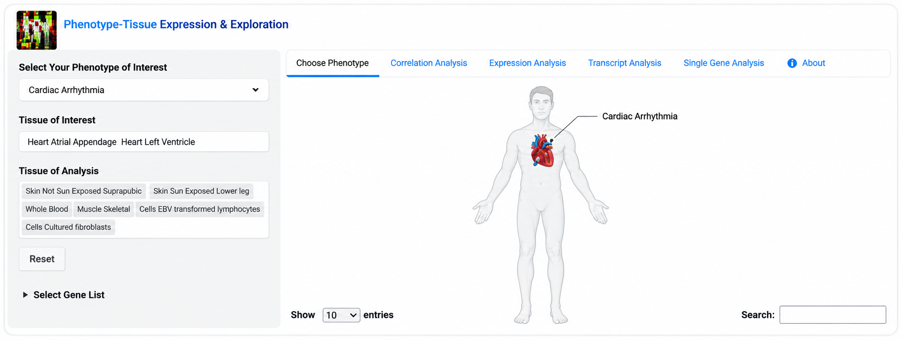

PTEEPhenotype-Tissue Expression & Exploration

First authorBMC Genomics · 2021Free web resource
PTEE: choosing the right tissue for RNA-seq diagnostics
- The problem
- In rare-disease genetics, the tissue that is clinically affected is often not the tissue that can be sampled, so RNA-seq can miss the signal that matters.
- What I built
- Phenotype-Tissue Expression and Exploration (PTEE), a freely available tool that links phenotype-annotated genes to expression across 54 GTEx tissues and shows which sampled tissue best represents the tissue of interest.
- Why it helps
- Clinical geneticists and researchers can choose a suitable tissue before sequencing, increasing the chance of a diagnosis or new gene discovery. PTEE also flags RNA-seq blind spots, such as genes switched on or off during development or by circadian rhythm.